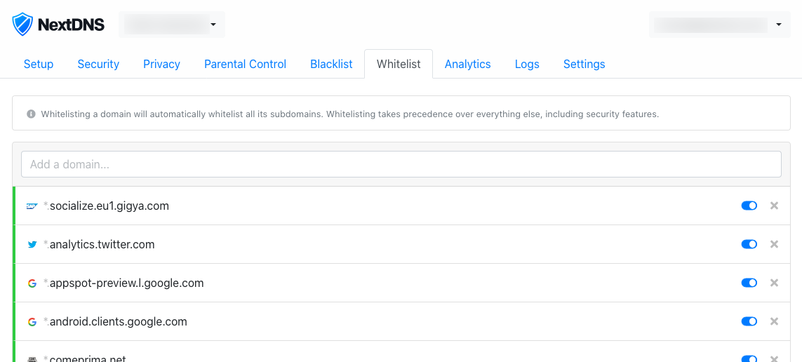

Cos'è ph-NDNS?
ph-NDNS è una lista di siti web.
Più nello specifico si tratta di un elenco di siti web leciti sul quale puoi basarti per popolare la sezione "Whitelist" di NextDNS, un servizio di DNS personalizzato che ti permette di proteggere la tua rete di casa da possibili veicoli di infezione, siti web non adatti alla tua famiglia e molto altro.
Ho parlato di NextDNS nel blog (qui l'articolo), vai alla pagina download per scoprire di più sulla lista.
Download
La whitelist per NextDNS è pubblicamente accessibile via GitHub all'indirizzo go.gioxx.org/ndns-whitelist e viene aggiornata grazie all'uso quotidiano di NextDNS e ai suggerimenti degli utenti. Puoi riportare un sito web bloccato per errore aprendo una nuova Issue su GitHub.

Contrariamente a Pi-hole, NextDNS non permette ancora di caricare una lista di domini che devono essere lasciati sbloccati ignorando le regole dettate dalle blocklists. Per questo motivo dovrai procedere manualmente copiando e incollando i singoli domini all'interno della tua Whitelist accessibile via my.nextdns.io/configuration.
Licenza d'uso, distribuzione
e supporto
Il progetto è auto-finanziato e mantenuto da Giovanni F. 'Gioxx' Solone. Tutte le informazioni riguardanti il progetto sono disponibili nel repository GitHub di ph-whitelist (progetto nato per Pi-hole e che ha dato poi origine al test di NextDNS) e nel mio blog.
Dove non diversamente specificato, il contenuto di questo sito web viene rilasciato con licenza Creative Commons, versione 4.0 by-nc-sa internazionale, descritta punto per punto a questo indirizzo: creativecommons.org/licenses/by-nc-sa/4.0/deed.it (oppure in inglese: creativecommons.org/licenses/by-nc-sa/4.0/deed.en).